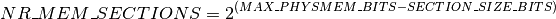

Physical Memory Model¶
Physical memory in a system may be addressed in different ways. The simplest case is when the physical memory starts at address 0 and spans a contiguous range up to the maximal address. It could be, however, that this range contains small holes that are not accessible for the CPU. Then there could be several contiguous ranges at completely distinct addresses. And, don’t forget about NUMA, where different memory banks are attached to different CPUs.
Linux abstracts this diversity using one of the two memory models: FLATMEM and SPARSEMEM. Each architecture defines what memory models it supports, what the default memory model is and whether it is possible to manually override that default.
All the memory models track the status of physical page frames using struct page arranged in one or more arrays.
Regardless of the selected memory model, there exists one-to-one mapping between the physical page frame number (PFN) and the corresponding struct page.
Each memory model defines pfn_to_page() and page_to_pfn()
helpers that allow the conversion from PFN to struct page and vice
versa.
FLATMEM¶
The simplest memory model is FLATMEM. This model is suitable for non-NUMA systems with contiguous, or mostly contiguous, physical memory.
In the FLATMEM memory model, there is a global mem_map array that maps the entire physical memory. For most architectures, the holes have entries in the mem_map array. The struct page objects corresponding to the holes are never fully initialized.
To allocate the mem_map array, architecture specific setup code should
call free_area_init() function. Yet, the mappings array is not
usable until the call to memblock_free_all() that hands all the
memory to the page allocator.
An architecture may free parts of the mem_map array that do not cover the
actual physical pages. In such case, the architecture specific
pfn_valid() implementation should take the holes in the
mem_map into account.
With FLATMEM, the conversion between a PFN and the struct page is straightforward: PFN - ARCH_PFN_OFFSET is an index to the mem_map array.
The ARCH_PFN_OFFSET defines the first page frame number for systems with physical memory starting at address different from 0.
SPARSEMEM¶
SPARSEMEM is the most versatile memory model available in Linux and it is the only memory model that supports several advanced features such as hot-plug and hot-remove of the physical memory, alternative memory maps for non-volatile memory devices and deferred initialization of the memory map for larger systems.
The SPARSEMEM model presents the physical memory as a collection of sections. A section is represented with struct mem_section that contains section_mem_map that is, logically, a pointer to an array of struct pages. However, it is stored with some other magic that aids the sections management. The section size and maximal number of section is specified using SECTION_SIZE_BITS and MAX_PHYSMEM_BITS constants defined by each architecture that supports SPARSEMEM. While MAX_PHYSMEM_BITS is an actual width of a physical address that an architecture supports, the SECTION_SIZE_BITS is an arbitrary value.
The maximal number of sections is denoted NR_MEM_SECTIONS and defined as

The mem_section objects are arranged in a two-dimensional array called mem_sections. The size and placement of this array depend on CONFIG_SPARSEMEM_EXTREME and the maximal possible number of sections:
When CONFIG_SPARSEMEM_EXTREME is disabled, the mem_sections array is static and has NR_MEM_SECTIONS rows. Each row holds a single mem_section object.
When CONFIG_SPARSEMEM_EXTREME is enabled, the mem_sections array is dynamically allocated. Each row contains PAGE_SIZE worth of mem_section objects and the number of rows is calculated to fit all the memory sections.
The architecture setup code should call sparse_init() to initialize the memory sections and the memory maps.
With SPARSEMEM there are two possible ways to convert a PFN to the corresponding struct page - a “classic sparse” and “sparse vmemmap”. The selection is made at build time and it is determined by the value of CONFIG_SPARSEMEM_VMEMMAP.
The classic sparse encodes the section number of a page in page->flags and uses high bits of a PFN to access the section that maps that page frame. Inside a section, the PFN is the index to the array of pages.
The sparse vmemmap uses a virtually mapped memory map to optimize pfn_to_page and page_to_pfn operations. There is a global struct page *vmemmap pointer that points to a virtually contiguous array of struct page objects. A PFN is an index to that array and the offset of the struct page from vmemmap is the PFN of that page.
To use vmemmap, an architecture has to reserve a range of virtual
addresses that will map the physical pages containing the memory
map and make sure that vmemmap points to that range. In addition,
the architecture should implement vmemmap_populate() method
that will allocate the physical memory and create page tables for the
virtual memory map. If an architecture does not have any special
requirements for the vmemmap mappings, it can use default
vmemmap_populate_basepages() provided by the generic memory
management.
The virtually mapped memory map allows storing struct page objects
for persistent memory devices in pre-allocated storage on those
devices. This storage is represented with struct vmem_altmap
that is eventually passed to vmemmap_populate() through a long chain
of function calls. The vmemmap_populate() implementation may use the
vmem_altmap along with vmemmap_alloc_block_buf() helper to
allocate memory map on the persistent memory device.
ZONE_DEVICE¶
The ZONE_DEVICE facility builds upon SPARSEMEM_VMEMMAP to offer
struct page mem_map services for device driver identified physical
address ranges. The “device” aspect of ZONE_DEVICE relates to the fact
that the page objects for these address ranges are never marked online,
and that a reference must be taken against the device, not just the page
to keep the memory pinned for active use. ZONE_DEVICE, via
devm_memremap_pages(), performs just enough memory hotplug to
turn on pfn_to_page(), page_to_pfn(), and
get_user_pages() service for the given range of pfns. Since the
page reference count never drops below 1 the page is never tracked as
free memory and the page’s struct list_head lru space is repurposed
for back referencing to the host device / driver that mapped the memory.
While SPARSEMEM presents memory as a collection of sections,
optionally collected into memory blocks, ZONE_DEVICE users have a need
for smaller granularity of populating the mem_map. Given that
ZONE_DEVICE memory is never marked online it is subsequently never
subject to its memory ranges being exposed through the sysfs memory
hotplug api on memory block boundaries. The implementation relies on
this lack of user-api constraint to allow sub-section sized memory
ranges to be specified to arch_add_memory(), the top-half of
memory hotplug. Sub-section support allows for 2MB as the cross-arch
common alignment granularity for devm_memremap_pages().
The users of ZONE_DEVICE are:
pmem: Map platform persistent memory to be used as a direct-I/O target via DAX mappings.
hmm: Extend ZONE_DEVICE with ->page_fault() and ->page_free() event callbacks to allow a device-driver to coordinate memory management events related to device-memory, typically GPU memory. See Heterogeneous Memory Management (HMM).
p2pdma: Create struct page objects to allow peer devices in a PCI/-E topology to coordinate direct-DMA operations between themselves, i.e. bypass host memory.